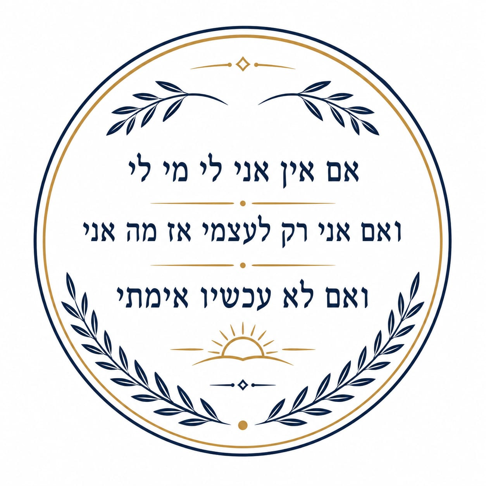

אנה בולמבך זסלבסקי Anna Bolembakh Zaslavsky Анна Болембах Заславски
אחות מוסמכת (RN), תואר שני (MA), מועמדת לאחות מומחית ברפואת משפחה RN, MA, Nurse Practitioner Candidate (Family Medicine) RN, MA, Кандидат в Практикующие Медсестры (Семейная Медицина)
מתן טיפול מבוסס ראיות, רפואת משפחה מקיפה ומצוינות קלינית ממוקדת מטופל. Delivering evidence-based care, comprehensive family medicine, and patient-centered clinical excellence. Предоставление научно обоснованного ухода, комплексной семейной медицины и клинического совершенства.
אודותיי About Me Обо Мне
תמצית מקצועית אישית Professional Summary Профессиональное Резюме
שמי אנה זסלבסקי, אחות מוסמכת (RN, MA) במכבי שירותי בריאות ומתמחה כיום ברפואת משפחה (לקראת הסמכת אחות מומחית במאי 2027). My name is Anna Zaslavsky, a Registered Nurse (RN, MA) at Maccabi Healthcare Services, currently specializing in Family Medicine (Nurse Practitioner certification expected May 2027). Меня зовут Анна Заславски. Я дипломированная медсестра (RN, MA) в Больничной Кассе «Маккаби», в настоящее время специализируюсь на семейной медицине (сертификация практикующей медсестры ожидается в мае 2027 года).
הגישה הקלינית שלי משלבת חמלה אנושית עמוקה עם חשיבה אנליטית קפדנית. אני לא מתפשרת על חצאי-תשובות ופועלת מתוך מיינדסט של חוקרת. אני בודקת כל פרט פעמיים, מאתגרת הנחות יסוד, ומאמינה שרפואה מצוינת דורשת כנות אינטלקטואלית וחתירה לאמת המדעית והרפואית המדויקת ביותר. My clinical approach combines deep human compassion with rigorous analytical thinking. I do not settle for half-answers and operate with a researcher's mindset. I double-check every detail, challenge assumptions, and believe that excellent medicine requires intellectual honesty and a relentless pursuit of the most precise scientific truth. Мой клинический подход сочетает глубокое человеческое сострадание со строгим аналитическим мышлением. Я не удовлетворяюсь полуответами и действую с мышлением исследователя. Я дважды проверяю каждую деталь, подвергаю сомнению предположения и верю, что превосходная медицина требует интеллектуальной честности и стремления к точной научной истине.
מעבר לפרוטוקולים, המסע האישי שלי כאשת מקצוע, סטודנטית ואמא לימד אותי שמאחורי כל תיק רפואי עומד אדם עם עולם ומלואו. המטרה שלי היא להעניק טיפול שהוא לא רק חד ומקצועי, אלא כזה שרואה את המטופל בגובה העיניים, מבין את מורכבות החיים שלו, ומעניק לו ביטחון מלא. Beyond protocols, my personal journey as a professional, student, and mother has taught me that behind every medical file is a human being with a whole world. My goal is to provide care that is not only sharp and professional, but also sees the patient at eye level, understands the complexity of their life, and gives them complete confidence. Помимо протоколов, мой личный путь как профессионала, студентки и матери научил меня, что за каждой медицинской картой стоит человек с целым миром. Моя цель — предоставлять уход, который является не только четким и профессиональным, но и позволяет общаться с пациентом на равных, понимая сложность его жизни и давая ему полную уверенность.
אודות תפקיד אחות מומחית בישראל: About the Nurse Practitioner Role in Israel: О роли практикующей медсестры в Израиле:
קורות חיים Curriculum Vitae Резюме
ניסיון קליני Clinical Experience Клинический Опыт
אחות מוסמכת ונאמנת אונקולוגיה (רפואה ראשונית) Registered Nurse & Oncology Care Champion (Primary Care) Дипломированная Медсестра и Куратор по Онкологии (Первичная Помощь)
צפה בתעודהView CertificateСмотреть Сертификатמכבי שירותי בריאות, אשדוד Maccabi Healthcare Services, Ashdod Больничная Касса «Маккаби», Ашдод
אחות מוסמכת, מרפאות חוץ - מכון הלב Registered Nurse, Outpatient Clinics - Heart Institute Дипломированная Медсестра, Амбулаторные Клиники - Институт Сердца
בית החולים הציבורי אסותא אשדוד Assuta Ashdod Public Hospital Государственная Больница «Ассута», Ашдод
אחות מוסמכת, רפואה ראשונית ומרפאה גריאטרית Registered Nurse, Primary & Geriatric Care Дипломированная Медсестра, Первичная и Гериатрическая Помощь
שירותי בריאות כללית Clalit Health Services Больничная Касса «Клалит»
אחות מוסמכת ומדריכה קלינית, מרפאה פסיכוגריאטרית Registered Nurse & Clinical Instructor, Psychogeriatric Clinic Медсестра и Клинический Инструктор, Психогериатрическая Клиника
המרכז הרפואי איכילוב Ichilov Medical Center Медицинский Центр «Ихилов»
אחות מוסמכת, מנהלת טיפול בחולים כרוניים במסגרת מוקד "מומה" (טלה-רפואה / Telemedicine) RN, Chronic Patient Care Manager at "MOMA" Center (Telemedicine) Менеджер по Уходу за Хроническими Больными в Центре «MOMA» (Телемедицина)
מכבי שירותי בריאות Maccabi Healthcare Services Больничная Касса «Маккаби»
אחות מוסמכת ומדריכה קלינית, מרפאה כללית וגריאטרית Registered Nurse & Clinical Instructor, General & Geriatric Clinic Медсестра и Клинический Инструктор, Общая и Гериатрическая Клиника
קופת חולים מאוחדת, אשדוד Meuhedet Health Services, Ashdod Больничная Касса «Меухедет», Ашдод
אחות מוסמכת ומדריכה קלינית, מחלקה גריאטרית Registered Nurse & Clinical Instructor, Geriatric Ward Медсестра и Клинический Инструктор, Гериатрическое Отделение
המרכז הרפואי ברזילי, אשקלון Barzilai Medical Center, Ashkelon Медицинский Центр «Барзилай», Ашкелон
השכלה ותארים אקדמיים Education & Academic Degrees Образование и Ученые Степени
אחות מומחית ברפואת משפחה Family Medicine Nurse Practitioner Практикующая Медсестра Семейной Медицины
בית הספר האקדמי לסיעוד זיוה טל Ziva Tal Academic School of Nursing Академическая Школа Сестринского Дела «Зива Таль»
תואר שני (M.A.) במדעי הבריאות (סיעוד) Master of Arts (M.A.) in Health Sciences (Nursing) Магистр (M.A.) в Здравоохранении (Сестринское Дело)
צפה בתעודהView CertificateСмотреть Сертификатאוניברסיטת תל אביב Tel Aviv University Тель-Авивский Университет
תואר ראשון (B.A.) בסיעוד Bachelor of Arts (B.A.) in Nursing Бакалавр (B.A.) в Области Сестринского Дела
צפה בתעודהView CertificateСмотреть Сертификатאוניברסיטת תל אביב Tel Aviv University Тель-Авивский Университет
תעודת אחות מוסמכת (RN) Registered Nurse (RN) License Лицензия Дипломированной Медсестры (RN)
צפה בתעודהView CertificateСмотреть Сертификатבית הספר לסיעוד אשקלון Ashkelon School of Nursing Школа Медсестер Ашкелона
השתלמויות מוכרות והסמכות מתקדמות Advanced Certifications & Post-Basic Courses Передовые Сертификации и Курсы
לימודים בקורס מומחיות קלינית ברפואת משפחה Family Medicine Nurse Practitioner Program Программа Подготовки Практикующей Медсестры Семейной Медицины
מרפאות רפואת משפחה, מכבי שירותי בריאות Family Medicine Clinics, Maccabi Healthcare Services Клиники Семейной Медицины, Больничная Касса «Маккаби»
הסמכת החייאה לבבית מתקדמת (ACLS) Advanced Cardiovascular Life Support (ACLS) Расширенная Сердечно-Сосудистая Реанимация (ACLS)
קורס התמחות: בינה מלאכותית בסיעוד Specialization Course: AI in Nursing Специализированный Курс: ИИ в Сестринском Деле
אוניברסיטת תל אביב Tel Aviv University Тель-Авивский Университет
השתלמות מוכרת בסיעוד הקהילה (רפואה ראשונית) Post-Basic Course in Community Nursing (Primary Care) Базовый Курс Общественного Сестринского Дела (Первичная Помощь)
צפה בתעודהView CertificateСмотреть Сертификатהשתלמות מוכרת בסיעוד גריאטרי משולב Post-Basic Course in Integrated Geriatric Nursing Базовый Курс Интегрированного Гериатрического Сестринского Дела
צפה בתעודהView CertificateСмотреть Сертификатהסמכת הדרכת סוכרת Diabetes Educator Certification Сертификация Преподавателя по Диабету
צפה בתעודהView CertificateСмотреть Сертификатהמרכז הרפואי שיבא, תל השומר Sheba Medical Center, Tel Hashomer Медицинский Центр «Шиба», Тель а-Шомер
קורס טיפול בפצעים לאחים ואחיות מוסמכים Wound Care Certification for RNs Сертификация по Лечению Ран для RN
צפה בתעודהView CertificateСмотреть Сертификатהמרכז הרפואי שיבא Sheba Medical Center Медицинский Центр «Шиба»
שפות Languages Языки
- רוסית: שפת אם Russian: Native Русский: Родной
- עברית: רמה גבוהה מאוד Hebrew: Fluent Иврит: Свободно
- אנגלית: רמה גבוהה מאוד English: Highly Proficient Английский: Свободно
הוקרה והצטיינות Awards & Recognitions Награды и Признание
מרכז הנחיות קליניות ופרוטוקולים Clinical Guidelines & Protocols Hub Центр Клинических Рекомендаций и Протоколов
משאבי עזר מהירים לפרקטיקה קלינית מבוססת ראיות. Quick reference resources for evidence-based clinical practice. Справочные материалы для доказательной клинической практики.
לב וכלי דם Cardiovascular Сердечно-сосудистая система
- הערכת נתיב אוויר, נשימה ומחזור דם (ABCs) ומדידת מדדים חיוניים. Assess Airway, Breathing, Circulation (ABCs) and measure vital signs. Оценка дыхательных путей, дыхания, кровообращения (ABC) и измерение показателей.
- מתן אספירין 162-325 מ"ג (בלעיסה). Administer Aspirin 162-325 mg (chewed). Назначить аспирин 162-325 мг (разжевать).
- ביצוע אק"ג 12 חיבורים בתוך 10 דקות מההגעה. Perform 12-lead ECG within 10 minutes of arrival. Выполнить ЭКГ в 12 отведениях в течение 10 минут.
- פתיחת גישה תוך-ורידית ולקיחת דם (סמנים לבביים, ספירת דם, ביוכימיה, תפקודי קרישה). Establish IV access and draw blood (cardiac markers, CBC, chemistry, coagulation). Внутривенный доступ и забор крови (кардиомаркеры, ОАК, биохимия, коагулограмма).
- מתן חמצן במידה והסטורציה יורדת מ-90%. Administer oxygen if saturation falls below 90%. Дать кислород, если сатурация ниже 90%.
- קביעת מועד אחרון בו נצפה בריא (Last Known Well - LKW). Determine Last Known Well (LKW) time. Определение времени последнего нормального состояния (LKW).
- ביצוע הערכת שבץ על פי מדד NIHSS. Perform stroke assessment using NIHSS scale. Оценка инсульта по шкале NIHSS.
- סי-טי (CT) ראש ללא חומר ניגוד בדחיפות, לשלילת דימום. Urgent non-contrast head CT to rule out hemorrhage. Срочная КТ головы без контраста для исключения кровоизлияния.
- בדיקת רמות סוכר בדם מיידית בקצה המיטה. Immediate bedside blood glucose check. Немедленная проверка уровня глюкозы в крови у постели больного.
- הערכת זכאות לטיפול ממיס קרישים (tPA) במסגרת חלון זמנים של 4.5 שעות. Assess eligibility for thrombolytic therapy (tPA) within 4.5-hour window. Оценка права на тромболитическую терапию (tPA) в течение 4.5 часов.
פרוטוקולים ברפואה ראשונית Primary Care Protocols Протоколы Первичной Помощи
- תקין: מתחת ל-120/80 ממ"כ Normal: Below 120/80 mmHg Нормальное: Ниже 120/80 мм рт. ст.
- מוגבר: 120-129/80- ממ"כ Elevated: 120-129/<80 mmHg Повышенное: 120-129/<80 мм рт. ст.
- יתר לחץ דם דרגה 1: 130-139/80-89 ממ"כ Stage 1 Hypertension: 130-139/80-89 mmHg Артериальная Гипертензия 1 Стадии: 130-139/80-89 мм рт. ст.
- יתר לחץ דם דרגה 2: 140/90 ומעלה ממ"כ Stage 2 Hypertension: ≥140/90 mmHg Артериальная Гипертензия 2 Стадии: ≥140/90 мм рт. ст.
פרמקולוגיה ופרמקוקינטיקה Pharmacology & Pharmacokinetics Фармакология и Фармакокинетика
רפואת חירום Emergency Medicine Экстренная Медицина
- אפינפרין (1:1000) 0.3-0.5 מ"ג בהזרקה לשריר (IM) באזור הקדמי-צידי של הירך. Epinephrine (1:1000) 0.3-0.5 mg IM in the anterolateral thigh. Эпинефрин (1:1000) 0.3-0.5 мг внутримышечно (IM) в бедро.
- חזרה על המינון כל 5-15 דקות באין שיפור. Repeat dose every 5-15 minutes if no improvement. Повторять дозу каждые 5-15 минут при отсутствии улучшения.
מחשבונים קליניים Clinical Calculators Клинические Калькуляторы
מחשבון תפקוד כלייתי - eGFR (CKD-EPI 2021) Renal Function Calculator - eGFR (CKD-EPI 2021) Калькулятор eGFR (CKD-EPI 2021)
המחשבון נועד להדגמה אקדמית בלבד ואינו מהווה תחליף לייעוץ רפואי מוסמך. This calculator is for academic demonstration purposes only and is not a substitute for professional medical advice. Данный калькулятор предназначен только для академической демонстрации и не заменяет профессиональную медицинскую консультацию.
איתור תרופות בסיכון לקשישים - Beers Criteria 2023 High-Risk Medication Search in Older Adults - Beers Criteria 2023 Поиск Лекарств Высокого Риска у Пожилых - Beers Criteria 2023
מאגר זה הינו חלקי (33 תרופות נבחרות) ונועד להדגמת הרכיב האקדמי. This database is partial (33 selected drugs) and intended for academic demonstration. Эта база данных является частичной (33 выбранных лекарств) и предназначена для академической демонстрации.
מצגות קליניות ואקדמיות Academic & Clinical Presentations Академические и Клинические Презентации
מצגות נבחרות ועבודות אקדמיות. Selected presentations and academic works. Избранные презентации и академические работы.
הדרכה וניהול קליני: מחלת הצליאק בילדים Clinical Management & Education: Celiac Disease in Children Клиническое Ведение и Обучение: Целиакия у Детей
תקציר מנהלים Executive Summary Краткий Обзор
מדריך קליני אינטראקטיבי המפרט את הפתופיזיולוגיה, מסלול האבחון (סרולוגיה וביופסיה), ומעקב סיעודי ארוך טווח בילדים עם צליאק. An interactive clinical guide detailing the pathophysiology, diagnostic pathway (serology and biopsy), and long-term nursing follow-up for children with celiac disease. Интерактивное клиническое руководство, подробно описывающее патофизиологию, путь диагностики (серология и биопсия) и долгосрочное сестринское наблюдение детей с целиакией.
נקודות מפתח Key Takeaways Ключевые Моменты
- הימנעות מוחלטת מגלוטן (פחות מ-20 ppm) לכל החיים היא חובה למניעת נזק סיסטמי. Strict lifelong gluten avoidance (less than 20 ppm) is mandatory to prevent systemic damage. Строгое пожизненное избегание глютена (менее 20 ppm) обязательно для предотвращения системного повреждения.
- אבחנה מחייבת בדיקות סרולוגיה (IgA TTG) ואישור היסטולוגי (ביופסיה ומדד Marsh). Diagnosis requires serology tests (IgA TTG) and histological confirmation (biopsy and Marsh score). Диагноз требует серологических тестов (IgA TTG) и гистологического подтверждения (биопсия и шкала Marsh).
- מעקב שגרתי דורש ניטור אנטרופומטרי מדויק, סרולוגיה ותמיכה תזונתית. Routine follow-up requires accurate anthropometric monitoring, serology, and nutritional support. Регулярное наблюдение требует точного антропометрического мониторинга, серологии и нутритивной поддержки.
יתר לחץ דם: אבחון, הערכה וטיפול Hypertension: Diagnosis, Evaluation, and Treatment Артериальная Гипертензия: Диагностика, Оценка и Лечение
תקציר מנהלים Executive Summary Краткий Обзор
סקירה קלינית מבוססת ראיות (EBM) המשלבת את הנחיות איגוד הלב האמריקאי (ACC/AHA) עם הנחיות החברה הישראלית, תוך דגש על אוכלוסיות יעד. An evidence-based medicine (EBM) clinical review integrating the American Heart Association (ACC/AHA) guidelines with Israeli society guidelines, focusing on target populations. Клинический обзор на основе доказательной медицины (EBM), объединяющий рекомендации Американской кардиологической ассоциации (ACC/AHA) с рекомендациями израильского общества, с акцентом на целевые популяции.
נקודות מפתח Key Takeaways Ключевые Моменты
- קו טיפול ראשוני מתבסס על שילובי תרופות (ACEi/ARB + CCB/Diuretics). First-line treatment is based on drug combinations (ACEi/ARB + CCB/Diuretics). Первая линия лечения основана на комбинациях препаратов (ингибиторы АПФ/БРА + БКК/диуретики).
- יעדי ל"ד נוקשים (<130/80) למטופלים בסיכון גבוה, מול יעדים מתונים יותר בקשישים (140-150/90). Strict BP targets (<130/80) for high-risk patients, versus more moderate targets in the elderly (140-150/90). Строгие цели АД (<130/80) для пациентов высокого риска, по сравнению с более умеренными целями у пожилых (140-150/90).
- ניטור מחוץ למרפאה (HBPM/ABPM) מהווה מרכיב קריטי באבחון מדויק. Out-of-office monitoring (HBPM/ABPM) is a critical component for accurate diagnosis. Амбулаторный мониторинг (СМАД/ДМАД) является критическим компонентом для точного диагноза.
אישור רפואי לחזרה למוסדות חינוך (מחלות מידבקות) Medical Clearance for Return to Educational Institutions (Infectious Diseases) Медицинское Разрешение на Возвращение в Образовательные Учреждения (Инфекционные Заболевания)
תקציר מנהלים Executive Summary Краткий Обзор
אינטגרציה של הנחיות משרד הבריאות והר"י, המגדירות את הקריטריונים הקליניים לחזרת ילדים למסגרות לאחר תחלואה זיהומית. Integration of Ministry of Health and IMA guidelines defining the clinical criteria for children returning to institutions following infectious illnesses. Интеграция рекомендаций Министерства здравоохранения и Израильской медицинской ассоциации, определяющих клинические критерии возвращения детей в учреждения после инфекционных заболеваний.
נקודות מפתח Key Takeaways Ключевые Моменты
- חום (≥38°C) מחייב הרחקה עד שחולפות 24 שעות ללא חום וללא משככי כאבים. Fever (≥38°C) requires exclusion until 24 hours pass without fever and without antipyretics. Температура (≥38°C) требует изоляции до прохождения 24 часов без температуры и жаропонижающих средств.
- זיהומי מערכת העיכול דורשים 24-48 שעות ללא תסמינים טרם חזרה, בהתאם למחולל. Gastrointestinal infections require 24-48 symptom-free hours prior to return, depending on the pathogen. Желудочно-кишечные инфекции требуют 24-48 часов без симптомов перед возвращением, в зависимости от возбудителя.
- דלקת שקדים סטרפטוקוקלית מחייבת 24 שעות ללא חום ומינימום 12 שעות טיפול אנטיביוטי. Streptococcal tonsillitis requires 24 hours without fever and a minimum of 12 hours of antibiotic treatment. Стрептококковый тонзиллит требует 24 часов без температуры и минимум 12 часов лечения антибиотиками.
גאוט: הלכה למעשה Gout: In Practice Подагра: На Практике
תקציר מנהלים Executive Summary Краткий Обзор
סקירה קלינית מקיפה לניהול מחלת הגאוט, כולל טיפול בהתקף חריף, טיפול מונע להורדת חומצת שתן (ULT), והתאמות תזונתיות, מבוסס על הנחיות ACR 2020. A comprehensive clinical review for the management of gout, including acute flare treatment, urate-lowering therapy (ULT), and dietary adjustments, based on ACR 2020 guidelines. Комплексный клинический обзор лечения подагры, включая лечение острых приступов, уратснижающую терапию (УСТ) и диетические корректировки, на основе рекомендаций ACR 2020.
נקודות מפתח Key Takeaways Ключевые Моменты
- טיפול ראשוני: אלופורינול נבחר כקו טיפול מועדף לכלל המטופלים להורדת חומצת שתן. First-line therapy: Allopurinol is strongly recommended as the preferred first-line urate-lowering agent for all patients. Терапия первой линии: Аллопуринол настоятельно рекомендуется в качестве препарата первого выбора для снижения уровня мочевой кислоты.
- יעדי טיפול: יש לשאוף ליעד מטרה של רמת חומצת שתן נמוכה מ-6 מ"ג/ד"ל (T2T - Treat-to-Target). Treatment target: A treat-to-target (T2T) approach with a serum urate goal of <6 mg/dL is strongly recommended. Цель лечения: Настоятельно рекомендуется подход «лечение до цели» (T2T) с целевым уровнем мочевой кислоты в сыворотке <6 мг/дл.
- טיפול מונע דלקת נלווה מומלץ יחד עם התחלת ULT (לדוגמה קולכיצין או NSAIDs) למשך מינימום 3-6 חודשים. Concomitant anti-inflammatory prophylaxis (e.g., colchicine or NSAIDs) is recommended upon initiating ULT for at least 3-6 months. Сопутствующая противовоспалительная профилактика (например, колхицин или НПВП) рекомендуется при начале УСТ в течение как минимум 3-6 месяцев.
הדרכות קליניות - בדיקה פיזיקלית Clinical Tutorials - Physical Examination Клинические Учебные Пособия - Физическое Обследование

פילוסופיית הטיפול שלי: רפואה בגובה העיניים My Philosophy of Care: Eye-Level Medicine Моя Философия Лечения: Медицина на Уровне Глаз
תפיסת העולם הקלינית שלי כאחות מומחית ברפואת משפחה נשענת על שילוב בין מקצוענות רפואית לבין העצמת המטופל, ומונחית על ידי שלושה עקרונות ברזל: My clinical worldview as a family nurse practitioner rests on the integration of medical professionalism and patient empowerment, guided by three core principles: Мое клиническое мировоззрение как семейной медсестры-специалиста опирается на интеграцию медицинского профессионализма и расширения прав и возможностей пациентов, руководствуясь тремя основными принципами:
- "אם אין אני לי, מי לי" – העצמה ואחריות אישית: "If I am not for myself, who will be for me" – Empowerment and Personal Responsibility: "Если я не за себя, то кто за меня" – Расширение Прав и Личная Ответственность: הריפוי והבריאות מתחילים במטופל עצמו. תפקידי הוא להעניק את הידע, הכלים והביטחון הנדרשים כדי שהמטופלים יוכלו לקחת שליטה על בריאותם, לנהל נכון תחלואה כרונית ולבצע בחירות מושכלות. Healing and health begin with the patient themselves. My role is to provide the knowledge, tools, and confidence required so that patients can take control of their health, properly manage chronic illness, and make informed choices. Исцеление и здоровье начинаются с самого пациента. Моя роль заключается в предоставлении знаний, инструментов и уверенности, необходимых для того, чтобы пациенты могли взять под контроль свое здоровье, правильно управлять хроническими заболеваниями и делать осознанный выбор.
- "וכשאני לעצמי, מה אני" – ברית קלינית ושותפות: "And being only for myself, what am I" – Clinical Alliance and Partnership: "А если я только за себя, то кто я" – Клинический Альянс и Партнерство: המטופל לעולם אינו צועד לבד. אני מאמינה ברפואה המבוססת על אמון, הקשבה וקשר אישי רציף. במרפאה, אני משמשת כעוגן מקצועי ומלווה ברגעי משבר ושגרה. The patient never walks alone. I believe in medicine based on trust, listening, and continuous personal connection. In the clinic, I serve as a professional anchor and companion in moments of crisis and routine. Пациент никогда не идет один. Я верю в медицину, основанную на доверии, умении слушать и постоянной личной связи. В клинике я служу профессиональным якорем и спутником в моменты кризиса и в повседневной жизни.
- "ואם לא עכשיו, אימתי" – רפואה מונעת ופרואקטיבית: "And if not now, when" – Preventive and Proactive Medicine: "И если не сейчас, то когда" – Профилактическая и Проактивная Медицина: הזמן הטוב ביותר לטפל במחלה הוא לפני שהיא מחמירה או מתפרצת. הגישה שלי שמה דגש עליון על רפואה מונעת, זיהוי מוקדם והתערבות קלינית מהירה. The best time to treat a disease is before it worsens or erupts. My approach places supreme emphasis on preventive medicine, early detection, and rapid clinical intervention. Лучшее время для лечения болезни - до того, как она ухудшится или разразится. Мой подход уделяет огромное внимание профилактической медицине, раннему выявлению и быстрому клиническому вмешательству.
יצירת קשר Contact Связь
להתייעצויות קליניות, פניות אקדמיות או יצירת קשרים מקצועיים. For clinical consultations, academic inquiries, or professional networking. Для клинических консультаций, академических запросов или профессиональных связей.
טלפון Phone Телефон
054-5465583אימייל Email Эл. почта
ane4kab@gmail.comשיוך ארגוני Affiliation Организация
מכבי שירותי בריאות Maccabi Healthcare Services Медицинская служба Маккаби